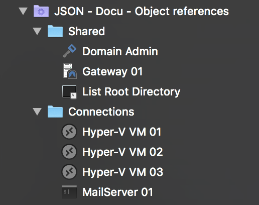

Object references and inheritance
One of the core features of Royal TS/X is to be able to assign objects to other objects, essentially creating object references. This, for instance, makes it possible to use a single credential object for hundreds or thousands of connections. Now, when the password of the credential expires it must only be changed in a single, central place instead of for each connection individually. While credential objects are the most common example for object references, other objects, like Secure Gateways and command- and key-sequence tasks can be referenced too.
Depending on the object type, multiple different ways to assign the object may be available. Credentials, for instance can be assigned using their ID (In the UI this is called "Use an existing credential"), their name ("Specify a credential name") or even inherited from their parent folder ("Use credentials from parent folder"). Of course, you can also directly enter your username and password by using the "Specify username and password" mode. Secure Gateways on the other hand can only be referenced by their ID or inherited from the object's parent folder. So there are slight differences that you need to be aware of when dealing with object references. The best way to learn those is to study which options are available in the UI for the various object types.
This should give you a quick overview over how object references and inheritance works in Royal TS/X. Now let's jump right into how this can be expressed in rJSON:
{
"Objects": [
{
"Type": "Folder",
"Name": "Shared",
"Objects": [
{
"Type": "Credential",
"Name": "Domain Admin",
"Username": "administrator",
"Password": "@he38qewhq82r!",
"ID": "00001"
},
{
"Type": "SecureGateway",
"Name": "Gateway 01",
"ComputerName": "gateway01",
"CredentialID": "00001",
"ID": "00002"
},
{
"Type": "KeySequenceTask",
"Name": "List Root Directory",
"KeySequence": "ls -lh /"
}
],
},
{
"Type": "Folder",
"Name": "Connections",
"CredentialID": "00001",
"SecureGatewayID": "00002",
"Objects": [
{
"Type": "RemoteDesktopConnection",
"Name": "Hyper-V VM 01",
"ComputerName": "hyper-v-vm-01",
"CredentialsFromParent": true,
"SecureGatewayFromParent": true
},
{
"Type": "RemoteDesktopConnection",
"Name": "Hyper-V VM 02",
"ComputerName": "hyper-v-vm-02",
"CredentialsFromParent": true,
"SecureGatewayFromParent": true
},
{
"Type": "RemoteDesktopConnection",
"Name": "Hyper-V VM 03",
"ComputerName": "hyper-v-vm-03",
"CredentialsFromParent": true,
"SecureGatewayFromParent": true
},
{
"Type": "TerminalConnection",
"TerminalConnectionType": "SSH",
"Name": "MailServer 01",
"ComputerName": "mail-server-01",
"Username": "root",
"Password": "@(h8e3r12!",
"SecureGatewayFromParent": true,
"KeySequenceName": "List Root Directory"
}
]
}
]
}
Alright, so let's first look at what this gives us in Royal TSX:

Here's what we have:
- Two folders ("Shared" and "Connections")
- One credential ("Domain Admin")
- One Secure Gateway ("Gateway 01")
- One key sequence task ("List Root Directory")
- Three Remote Desktop connections
- One SSH connection
What you don't get to see in the screenshot is how the various objects are connected to each other. Let's start with the "Domain Admin" credential.
In line 12 we express that we would like the credential to have the ID "00001". We can then use this ID to refer to the credential from other objects. In line 31 we set the CredentialID property of the "Connections" folder to the ID of our "Domain Admin" credential (ID "00001").
This basically means: Assign "Domain Admin" to "Connections".
Now that we have our credential assigned to the "Connections" folder, we want the connections themselves to actually use that credential. To do so, we specify "CredentialsFromParent": true in lines 38, 45 and 52. Now all of the three Remote Desktop connections inherit the credentials from their parent folder, "Connections".
For the "MailServer 01" SSH connection we want to use a different set of credentials and since no other object uses the same credentials, we directly specify the username and password of this connection in lines 60 and 61 using the Username and Password properties.
That's it for credential assignment. Because we need a Secure Gateway to connect to each of our remote machines, we also assign the Secure Gateway object (ID "00002") to the "Connections" folder and let the connections inherit it from their parent folder. In line 32 we specify "SecureGatewayID": "00002" on our "Connections" folder. Then, for each of our connections we set "SecureGatewayFromParent": true to let them inherit the Secure Gateway configuration from their parent folder.
That's it for Secure Gateway assignment. Last but not least, we defined a key sequence task which lists the contents of the root directory. The definition of the object starts at line 21. For demo purposes we chose a different approach to assign this task to the SSH connection. Instead of referring to it by its ID, we use its name "List Root Directory". So in line 63 we have this: "KeySequenceName": "List Root Directory". This means, when the connection is established, launch the key sequence task with the name "List Root Directory".